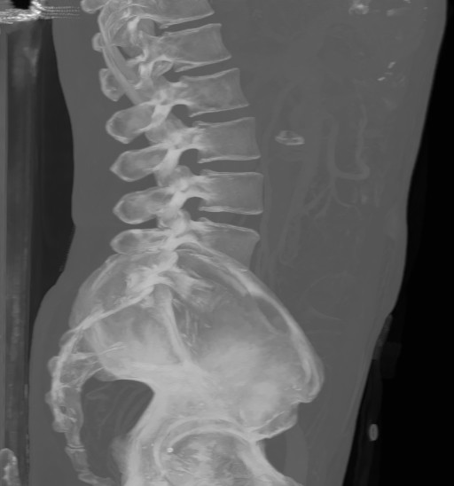

 
Part of the core algorithm set are reductions - algorithms which reduce the dimension of the input view by applying binary associative operation on its elements.
In this example we will implement maximum intensity projection (MIP) algorithm, which can be often found in volume renderers - it creates output image by searching for maximum value along the ray. Because of that the high intesity features will be present in the output image - in our sample dataset we clearly see the bones in abdomen CT, it is also used in angiography to highlight positions of blood vessels (after application of contrast agent).
We will not implement fully fledget volume renderer here. We will use the reduction algorithms to simulate such renderer, because raycasting can be interpreted as reduction along the ray. The dimensionReduce() algorithm operates along selected axis (X,Y,Z in 3D case) it means that we can create MIP image for parallel projections and for 3 basic viewing directions as can be seen in output images at the top.
The actual parameters are input view, output view of proper size, axis along which the reduction will occur, initial_value (its type is used as result type) and a functor. The axis is a compile time template parameter, that is why we use the DimensionValue<1>{} as a parameter so template parameter deduction can get the axis (Y in this case) without the need to specify it as a template parameter, which can be cumbersome.
For arbitrary viewing direction we have to rotate the input dataset, so we can apply the dimensionReduce(). This certainly is not a good way to implement interactive volume viewer, but it serves as an example, how to do the geometrical transformation.
Geometrical trasnformations in the BoltView library can be computed either explicitely by calling geometryTransformation(), or we can employ the lazy evaluation in form of TransformedImageView(), which computes the image element value by doing inverse coordinate trasform and query from the wrapped image view. We will create rotated image view in our case.